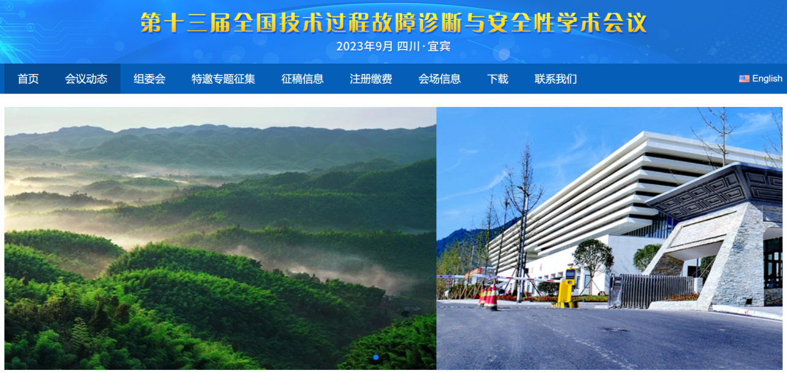

学院通知 · 科研创新
2023中国自动化学会第十三届全国技术过程 故障诊断与安全性学术会议通知
发布时间：2023-02-24
会议简介 全国技术过程故障诊断与安全性学术会议由中国自动化学会技术过程的故障诊断与安全性专业委员会主办。会议每两年举办一次，旨在为从事相关领域和研究的国内外专家学者和工程技术人员提供一个充分交流最新学术进展和技术问题的平台，增进交流与合作，促进本领域的继续进步。第十三届全国技术过程故障诊断与安全性学术会议（ CAA SAFEPROCESS 2023 ）将于 2023 年 9 月 22 日 -24 日（周五 - 周日）召开，地点位于宜宾国际会议中心。会议由四川大学、四川轻化工大学和人工智能四川省重点实验室联合承办。 CAA SAFEPROCESS 2023 将集聚国内外高等院校、科研院所和工业部门的专家学者，探讨和交流本领域相关的学术和技术问题，并将邀请本领域国际知名学者作大会特邀报告。会议包括小组讨论、特邀报告、口头报告和张贴报告等，录用论文通过 IEEE 审核后将被 IEEE Xplore Library 收录。 2023 ，四川宜宾欢迎您的到来！ 征稿范围 CAA SAFEPROCESS 2023会议接受理论和应用相关的英文学术论文投稿。征稿范围包括但不限于以下主题： T01 模型驱动的故障诊断 T11 基于柔性计算的故障诊断 T02 数据驱动的故障诊断 T12 安全关键系统 T03 过程监督 T13 结构健康监测 T04 主动故障诊断 T14 系统识别与状态估计 T05 状态监测与故障预测 T15 仪器和控制系统安全性 T06 信息物理系统安全性 T16 控制系统的风险评估 T07 容错控制 T17 自愈控制 T08 离散事件系统的故障诊断与容错控制 T18 无损检测技术与装置 T09 故障诊断与容错控制的结构化方法 T19 控制系统实时安全性评估 T10 基于统计的故障诊断 以及以下相关领域的应用： A01 航空航天 A02 汽车 A03 电气、机械和机电一体化系统 A04 化工 A05 网络 A06 工艺过程 A07 生物系统 A08 生产线 A09 船舶 A10 电网 A11机器人 投稿须知 CAA SAFEPROCESS 2023只接受英文论文投稿。所有投稿需表述完整，包括研究的主要思路、创新点等。所有投稿需按照IEEE会议论文集的双栏格式排版，包括正文、参考文献、附录和图片等，最长不超过6页，并以PDF格式提交。论文模板下载 链接： https://fdd2023.aconf.org/callforpaper.html 会议状态 会议已经得到 IEEE Technical Sponsorship 的正式批准，并申请通过了会议论文集的 IEEE 出版。为方便 CAA SAFEPROCESS 2023 作者及参会者交流和联系，特建立了参会微信交流群，群二维码如下： 特邀专题会议征集 为进一步加强大会的组织领导，切实把大会办成交流优秀科研成果、研讨热点前沿问题、展示相关专家学者和团队风采的一流平台，现诚邀相关单位和专家学者组织特邀专题会议（ Special session ）。相关要求如下： 1. 相关领域的单位和专家学者均可向大会提交特邀专题会议申请。特邀专题会议申请表见附件（中英文表格均需填写，附件下载链接 ( https://fdd2023.aconf.org/download.html ) 2. 会议召集人应基于大会征文通知中的 19 项征文主题，确定专题会议的主题。 3. 每个特邀专题会议到会交流的论文至少 6 篇。 4. 请于 2023 年 3 月 20 日前将专题相关信息发送至大会邮箱 fdd2023@163.com ，包括特邀专题会议的名称、简介（目的和内容）、召集人的姓名、职称、单位、邮箱。 5. 相关作者按照大会征文通知的要求撰写论文，在提交论文时，需选择专题会议代码。大会将依据该代码选择相应的专家进行专题评审。 特邀专题会议申请联系人：张玉杰；手机（微信）： 18724514653 ；邮箱： fdd2023@163.com 。大会网址： https://fdd2023.aconf.org
